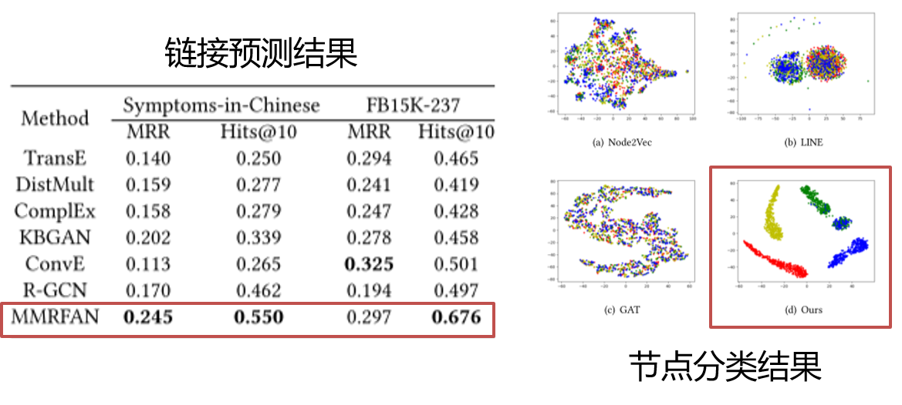

介绍
在2018至2020年中，我们已经发表了46篇论文，其中高水平期刊论文有16篇，包括TMM，TNN，TIP等；高水平会议论文有19篇，包括MM，CVPR，AAAI，ICML等；高水平论文总数已经超过项目的5年目标。专利方面有14项受理，4项授权。以下是几个代表性成果介绍：
知识引导的多模态事件识别
背景/动机：
用户兴趣动态变化，如何准确、合理地捕捉用户的动态兴趣是实现个性化健康管理的重点。
挑战：
（1）传统基于知识图谱的方法没有考虑用户行为的时序性，从而导致了随着时间漂移而对用户动态偏好进行建模较为困难。
（2）大多数基于深度学习的推荐方法不考虑向用户提供可信的解释。
思路/方法：
（1）提出基于知识图谱的可解释性用户建模方法，通过引入语义路径来捕捉用户动态偏好。
（2）通过捕捉交互级别的用户动态兴趣得到包含丰富语义信息的高层表示，并提供准确的可解释性推荐。
结果/总结：
（1）主要创新点：捕捉交互级别的用户动态兴趣，多模态融合得到效果更好的表示，通过知识图谱语义路径赋予了推荐算法可解释的能力。
（2）相关工作发表在多媒体顶级ACM Multimedia 2019。
知识引导的多模态事件识别
背景/动机：
从多源实时数据流中准确提取事件是实现健康管理的基础，利用不同模态数据之间的互补性可以提升事件识别模型的性能。
挑战：
多源时序数据模态差异大，不同模态的时序数据匹配难，学习事件识别模型缺乏大规模多模态训练数据。
思路/方法：
（1）提出知识引导的多模态事件识别框架，包含语义特征提取、实体关系构建和融合与识别模块。
（2）主要创新点：结合外部知识构建中层语义之间的关系，利用图神经网络实现知识引导的事件识别。
结果/总结：
（1）在三个公开数据集上的事件识别性能获得了提升，同时在少样本的事件类别上的识别性能获得了显著提升。
（2）相关工作发表在多媒体领域国际权威期刊 ACM Transactions on Multimedia Computing, Communications, and Applications 2020。
跨领域的多模态情绪识别
背景/动机：
针对多模态情绪识别任务（视觉和语音），如何减小多模态情绪识别模型在训练和测试环境下存在的域差异？。
挑战：
大多数跨域学习算法只研究了单模态数据，不同模态的数据存在模态独有的结构和内容，什么样的多模态融合策略适合跨域学习？不同模态数据的共同域差异≠各模态域差异之和，如何连接两个多模态域，减小多模态域差异？
思路/方法：
（1）定义和实现了多模态域适应情绪识别的框架。
（2）提出解决多模态数据异构性的协变多模态注意力机制，引入结构敏感模块以捕捉不同模态数据的结构信息。
（3）提出混合对抗约束训练，分别作用在语音和视觉特征、加权后的语音和视觉特征、多模态融合后的特征，从而缩小两个多模态域之间的域差异。
结果/总结：
（1）主要创新点：在深度学习框架下，首次定义并提出了多模态领域适应的情绪识别算法框架，将视觉和语音信号以结构敏感的注意力机制进行融合，在对抗约束训练下，缩小了多模态域差异。
（2）在跨领域情绪识别问题上，比已有方法提高2%-8%以上，相关工作发表在多媒体顶级会议 ACM Multimedia 2018。
多模态健康知识图谱表示
背景/动机：
现有知识图谱表示方法不适用于多模态健康知识图谱：模态单一，未充分利用结构信息。
挑战：
如何融合实体的多模态表示与图谱的结构信息构建更有效的多模态健康知识图谱。
思路/方法：
使用对抗学习网络，整合多种模态的知识图谱节点属性。
（1）使用对抗学习网络，整合多种模态的知识图谱节点属性。
（2）使用图神经网络以及注意力机制，适应知识图谱异构性，提供多模态健康知识图谱表示的统一框架。
结果/总结：
（1）主要创新点：在深度学习框架下，将多模态数据映射到特征表示空间中，缓解了知识图谱表示多模态异构问题。
（2）在链接预测与节点分类任务上，都取得了较为明显的效果，相关工作发表在多媒体顶级会议 ACM Multimedia 2020上。

基于动态行为图的个体健康状态预测
背景/动机：
现有的健康状态预测方法依赖单源数据，无法全面感知用户行为；基于传统机器学习的方法无法准确捕捉个体行为的时序结构信息。
挑战：
如何对多源数据进行结构化建模, 如何挖掘个体的动态行为时序变化并实现更准确的健康状态预测。

思路/方法：
（1）基于多源传感器数据识别事件标签序列。
（2）基于多源事件标签序列，构建局部行为图。
（3）基于图神经网络捕捉局部行为结构信息。
（4）基于自注意力机制建模全局时序结构信息，实现健康状态预测。
结果/总结：
（1）主要创新点：利用多种传感器数据动态构建个体行为图并进行时序结构特征学习，有效地实现了个体生活方式的时序结构表示。
（2）在健康状态预测任务上，比已有方法提高5%以上，相关工作已投稿多媒体领域国际权威期刊 ACM Transactions on Multimedia Computing, Communications, and Applications 2020。